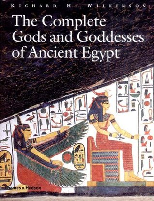

5: The Odyssey

Ratings : 🌟 3.8/5
Author : Homer
Genre :Epic PoetryMythology
Year Published : 1488
Pages : 270
Brief:
The Odyssey begins after the end of the ten-year Trojan War (the subject of the Iliad), from which Odysseus, king of Ithaca, has still not returned due to angering Poseidon, the god of the sea. Odysseus' son, Telemachus, is about 20 years old and is sharing his absent father's house on the island of Ithaca with his mother Penelope and "the Suitors," a crowd of 108 boisterous young men who each aim to persuade Penelope for her hand in marriage, all the while reveling in the king's palace and eating up his wealth.
Odysseus' protectress, the goddess Athena, asks Zeus, king of the gods, to finally allow Odysseus to return home when Poseidon is absent from Mount Olympus. Then, disguised as a chieftain named Mentes, Athena visits Telemachus to urge him to search for news of his father. He offers her hospitality and they observe the suitors dining rowdily while Phemius, the bard, performs a narrative poem for them.
That night, Athena, disguised as Telemachus, finds a ship and crew for the true prince. The next morning, Telemachus calls an assembly of citizens of Ithaca to discuss what should be done with the insolent suitors, who then scoff at Telemachus. Accompanied by Athena (now disguised as Mentor), the son of Odysseus departs for the Greek mainland, to the household of Nestor, most venerable of the Greek warriors at Troy, who resided in Pylos after the war.
4: The Complete Gods and Goddesses of Ancient Egypt
Ratings : 🌟 4.1/5
Author : Richard H. Wilkinson
Genre :MythologyAncient Fiction
Year Published : 2003
Pages : 256
Brief:
Worshipped for over three-fifths of recorded history, Egypt's gods and goddesses are among the most fascinating of human civilization. The lives of pharaohs and commoners alike were dominated by the need to honor, worship, and pacify the huge pantheon of deities, from the benevolent to the malevolent. The richness and complexity of their mythology is reflected in countless tributes throughout Egypt, from lavish tomb paintings and imposing temple reliefs to humble household shrines.
This book examines the evolution, worship, and eventual decline of the numerous gods and goddesses--from minor household figures such as Bes and Tawaret to the all-powerful deities Amun and Re--that made Egypt the most theocratic society of the ancient world, and made Egyptians, according to Herodotus, "more religious than any other people."
Now available in paperback, with hundreds of illustrations and specially commissioned drawings, this title remains the most comprehensive and authoritative guide to the deities that lay at the heart of Egyptian religion and society.
3: Bulfinch's Mythology

Ratings : 🌟 4.1/5
Author : Thomas Bulfinch
Genre :Mythology
Year Published : 1867
Pages : 862
Brief:
The book is a prose recounting of myths and stories from three eras: Greek and Roman mythology, King Arthur legends and medieval romances. Bulfinch intersperses the stories with his own commentary, and with quotations from writings by his contemporaries that refer to the story under discussion. This combination of classical elements and modern literature was novel for his time.
Bulfinch expressly intended his work for the general reader. In the preface to The Age of Fable he states "Our work is not for the learned, nor for the theologian, nor for the philosopher, but for the reader of English literature, of either sex, who wishes to comprehend the allusions so frequently made by public speakers, lecturers, essayists, and poets, and those which occur in polite conversation."
2: Norse Mythology

Ratings : 🌟 4.1/5
Author : Neil Gaiman
Genre :Fantasy fictionMythology
Year Published : 2017
Pages : 301
Brief:
Neil Gaiman, long inspired by ancient mythology in creating the fantastical realms of his fiction, presents a bravura rendition of the Norse gods and their world from their origin though their upheaval in Ragnarok.
In Norse Mythology, Gaiman stays true to the myths in envisioning the major Norse pantheon: Odin, the highest of the high, wise, daring, and cunning; Thor, Odin’s son, incredibly strong yet not the wisest of gods; and Loki—son of a giant—blood brother to Odin and a trickster and unsurpassable manipulator.
Gaiman fashions these primeval stories into a novelistic arc that begins with the genesis of the legendary nine worlds and delves into the exploits of deities, dwarfs, and giants. Through Gaiman’s deft and witty prose, these gods emerge with their fiercely competitive natures, their susceptibility to being duped and to duping others, and their tendency to let passion ignite their actions, making these long-ago myths breathe pungent life again.
1: The Immortals of Meluha

Ratings : 🌟 4.1/5
Author : Robert E. Howard
Genre :Adventure NovelSwordSorcery
Year Published : 2010
Pages : 390
Brief:
Meluha is a near perfect empire, created many centuries earlier by Lord Ram, one of the greatest Hindu kings that ever lived. However, the once proud empire and its Suryavanshi rulers face severe crisis as its primary river, Saraswati, is slowly drying to extinction. They also face devastating attacks from the Chandravanshis who have joined forces with the Nagas, a cursed race with physical deformities. The present Meluhan king, Daksha, sends his emissaries to North India in Tibet, to invite the local tribes to Meluha. Shiva, chief of the Guna tribe, accepts the proposal and moves to Meluha with his people. Once reached they are received by Ayurvati, the Chief of Medicine of the Meluhans. The Gunas are impressed with the Meluhan way of life. On their first night of stay the tribe wake up with high fever and sweating. The Meluhan doctors administer medicine.
Ayurvati finds out that Shiva is the only one devoid of these symptoms and that his throat has turned blue. The Meluhans announce Shiva as the Neelkanth, their fabled saviour. Shiva is then taken to Devagiri, the capital city of Meluha, where he meets Daksha. While staying there, Shiva and his comrades, Nandi and Veerbhadra, encounter Princess Sati, the daughter of Daksha. She is a Vikarma, an untouchable person due to sins committed in her previous births. Shiva tries to court her, but she rejects his advances. Ultimately Shiva wins her heart and even though the Vikarma rule prohibits them from doing so, an enraged Shiva vows to dissolve it and marries Sati.